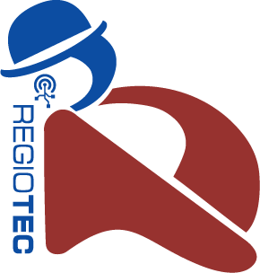
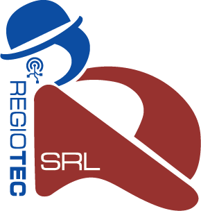

IT-Service im Microsoft-Umfeld
Unterstützung bei Microsoft 365, Azure, Entra ID, SharePoint, Teams, Intune und zugehörigen Cloud-Strukturen.

regioTec IT Services for HealthcareregioTec & regioTec Service S.R.L.
Wir unterstützen Praxen und medizinische Dienstleister bei Planung, Strukturierung und Umsetzung moderner IT-Umgebungen im Microsoft-Ökosystem.

regioTec übernimmt die Beratung, Planung und Schnittstellenfunktion in Deutschland. RegioTec Service S.R.L. unterstützt als operative Einheit in Rumänien bei der kosteneffizienten Umsetzung definierter IT-Dienstleistungen.
Leistungen
Unterstützung bei Microsoft 365, Azure, Entra ID, SharePoint, Teams, Intune und zugehörigen Cloud-Strukturen.
IT-nahe Dienstleistungen für Arztpraxen, medizinische Dienstleister und Gesundheitsorganisationen mit Blick auf Prozesse, Datenschutz und Alltagstauglichkeit.
Analyse, Konzeption und Planung von IT-Strukturen im medizinischen Umfeld, inklusive Schnittstellen, Rollen, Berechtigungen und Cloud-Architektur.
Hardware wird nur projektbezogen als Ergänzung zur Umsetzung angeboten. Eine allgemeine Hardwarewartung ist nicht Bestandteil unseres Leistungsangebots.
Kooperationsmodell
Beratung, Planung, Projektsteuerung und zentrale Schnittstelle zu Kunden in Deutschland.
Operative Dienstleistungserbringung aus Rumänien für definierte IT- und Projektleistungen.
Medizinische Einrichtungen erhalten planbare IT-Strukturen mit klarer Beratung, kontrollierter Umsetzung und wirtschaftlicher Skalierung.
Kontakt
Dr. Christian Bauer
Gothestr. 11
17373 Ueckermünde
Deutschland
+49 3976 204033
Fax: +49 3976 204043
info@regiotec.com
VAT: DE169941868
Dr. Christian Bauer
Eva Ziese
C.A. Rosetti street no 17
Bucharest 020011
Romania
+40 21 527 0360
info.ro@regiotec.com
VAT: RO43314589